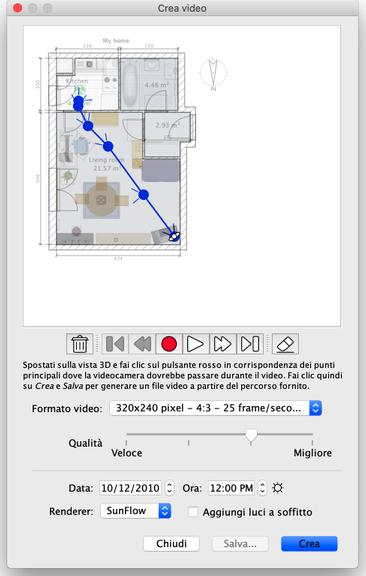

| Creare video | |||
Per creare un video 3D della tua casa, seleziona la voce di menu Vista 3D > Crea video... o fai clic sullo strumentoCrea video.
Sarà visualizzata una finestra simile a quella dedicata alla creazione di foto.  Nella parte superiore di questo riquadro, appare la piantina della tua casa sulla quale
sarà disegnato il percorso virtuale della videocamera. Sotto il piano, il
i pulsanti di registrazione, riproduzione ed eliminazione ti aiutano a registrare i punti
in cui passerà il percorso della telecamera, riprodurre il percorso registrato o rimuovere
alcuni punti del percorso. Per creare un video, scegli la posizione iniziale della videocamera
nella vista 3D della finestra principale di Sweet Home 3D e fai clic sul pulsante rosso
nel riquadro di creazione del video. Quindi spostati nella vista 3D alla posizione successiva
della videocamera e fai clic nuovamente sul pulsante rosso. Ripeti questi
passaggi per ogni posizione in cui la telecamera deve passare durante il video.
|
|